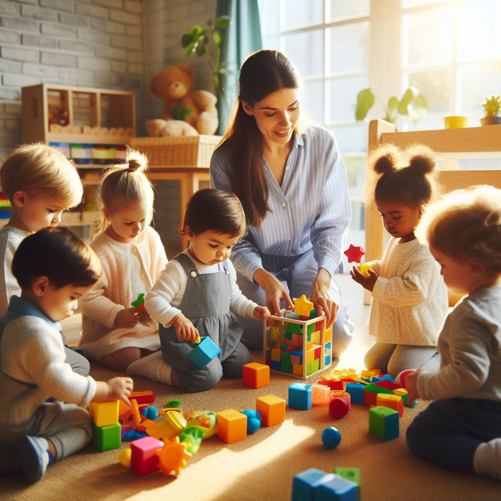

K.Ayesha Study Experience
Introduction:
Because I was an obedient student most of the time, I felt that my study experience was very boring, but during the past few months, everything has completely changed.I believe that the teacher plays a crucial part in shaping our lives throughout the entire learning process. In my educational path, I have the utmost regard for each and every teacher.It is a blessing to have a wonderful teacher in our lives.
Nursery
I was a quiet, unassuming youngster in nursery school who used to cry every day to get to school.When I was a really wild kid, I even used a scale to beat a classmate who was making fun of me since I felt like she was bullying me. My teacher gave me a nice reprimand for that.I was a well-behaved student who excelled in academics right from the start, maintaining a GPA of at least 95%.
Primary School In the bustling corridors of the primary school, a young girl embarks on a journey of discovery and growth. Each day is a tapestry woven with colorful lessons and friendships blooming like spring flowers. Amid the laughter echoing in the playground, she eagerly absorbs the alphabet's mysteries and numbers' dance, laying the foundation of her academic prowess. With a backpack filled with curiosity and dreams, she navigates through the vibrant classrooms, her imagination ignited by stories of far-off lands and heroic adventures. Here, in the primary school's nurturing embrace, she learns not only the fundamentals of education but also the values of kindness, resilience, and compassion that will shape her into a confident and compassionate
High School 
In the virtual realm of online classes during high school, a young girl navigates a landscape of pixels and screens, where the boundaries between home and school blur into a digital tapestry of learning. With a laptop as her window to education, she adapts to this new normal, trading in bustling hallways for the quiet hum of her bedroom. Here, amidst the familiar comforts of home, she embarks on a journey of discovery, logging into virtual classrooms where faces appear in small squares, voices crackle through speakers, and lessons unfold through the digital ether. Yet, despite the distance, connections are forged, friendships bloom, and teachers become guiding lights through the maze of assignments and deadlines. She learns to juggle the intricacies of time management, balancing the demands of synchronous classes with asynchronous tasks, all while grappling with the occasional technical glitch that interrupts the flow of learning. Through perseverance and adaptability, she finds moments of inspiration and growth, transforming the digital landscape of online classes into a canvas for her intellectual curiosity and academic pursuits.
PUC

PU college was a whirlwind of textbooks and late nights. The pressure to perform hung heavy in the air. We were constantly bombarded with lectures, assignments, and mock tests. Every spare minute was seen as an opportunity to squeeze in some extra studying. The library became a second home, fueled by the anxieties of entrance exams. Despite the stress, there was a strange sense of camaraderie amongst us students, a shared understanding of the struggles we faced. We pushed each other, motivated each other, and found pockets of laughter even under the weight of expectation.
Main turning point
The main turning point in my life came right after completing my pre-university education, where my academic focus had been primarily on biology. Little did I anticipate that a significant shift awaited me at this juncture. Upon concluding my pre-university coursework, I found myself at a crossroads, faced with the pivotal decision of choosing my field of further study. Despite my background in biology, circumstances steered me towards engineering. This transition marked a profound moment of divergence in my academic journey, propelling me into a realm of technical knowledge and problem-solving that I had not previously explored. Embracing this change demanded adaptation, determination, and a willingness to embark on an entirely new intellectual adventure. In hindsight, while the decision to pivot towards engineering was initially daunting, it ultimately led me down a path rich with discovery, growth, and unforeseen opportunities, shaping the trajectory of my life in profound ways.
The Best Life
Juggling code and caffeine, life as a software engineering student is a whirlwind for me, but in the best way possible. There's a thrill in seeing my lines of code come to life, building something functional and creative. Don't get me wrong, there are challenges, but overcoming them and witnessing my skills grow is incredibly rewarding. Engineering as a career path feels like the perfect fit – it lets me be creative, solve problems, and constantly learn. It's an exciting adventure, and I'm loving every minute of it.